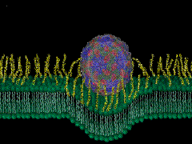

| |
| Medicine
of the Future |
| |
|
|
|
|
| This is the unabridged version of article
that was published by Chip Doctor's Special, Sep 99. |
| |
|
|
|
|
| TABLE
OF CONTENTS |
| |
|
|
|
|
| INTRODUCTION.:
|
|
| ALL-ROUND
DEVELOPMENT |
| |
|
|
|
|
|
LIVE 40% LONGER |
| |
|
|
|
|
| OPEN
YOUR BODY OPEN YOUR MIND |
| |
|
|
|
|
| THE
ARTIFICIAL HUMAN AND ARTIFICIAL SURGEONS |
| |
|
|
|
|
| ELECTRONICS
AND INSULIN |
| |
|
|
|
|
|
BIO COMPUTER |
| |
|
|
|
|
|
EAT OFF THE TOILET BOWL |
| |
|
|
|
|
| ANTI-GLOBAL
WARMING BACTERIUM |
| |
|
|
|
|
| BRAIN
AND GAMMA KNIFE RADIATION |
| |
|
|
|
|
|
BRAIN CANCER TACKLED BY A VIRUS |
| |
|
|
|
|
| CANCER
& TECHNOLOGY |
| |
|
|
|
|
|
DATABASE of CT SCANS |
| |
|
|
|
|
| GENETIC
MODIFICATION A NEW WAY |
| |
|
|
|
|
| GENETICS
AND SOCIAL BEHAVIOR |
| |
|
|
|
|
| ANTIBODY
AND THE COMMON COLD |
| |
|
|
|
|
| CONCLUSION
|
| |
|
|
|
|
| |
|
|
|
|
| |
|
|
|
|
| INTRODUCTION |
| |
|
|
|
| We have seen more advances
in medical science in the last 50 years than in all of previous history.
Our world has been transformed in ways that surpass the wildest imagination.
Technology that exists today was unthinkable in the 50s. Can we guess
the technology that will flourish, say, even 25 years from now? As
we take a peek into the emerging medical technologies of the 21st
Century we stand agape as our bemusement tinges with trepidation by
the very thought of techno-human evolution in the new world order
of a knowledge-based society that promises to take us to the limit
and beyond in the next millennium. |
| |
|
|
|
|
| ALL-ROUND DEVELOPMENT
|
|
| The good old black-and-white
days of dull advertisements and weekly television films are over.
Advances in telecommunication let us sit in our living rooms and watch
sports, wars, famines, revolutions and other events taking place as
they actually occur on the other side of the globe. |
|
| Meteorologists, with data
gathering satellites and semiconductor-based computers predict the
movement of dangerous storms and save untold lives every year. |
|
|
|
|
|
| Military pilots and soldiers
use infrared technology to see in the dark and electronic guidance
to strike distant targets with unbelievable precision. Electronic
simulators let them fight the wars of the future in a world of virtual
reality. |
|
|
|
|
|
| High-school students around
the world think nothing today of doing their homework and project
work on the Internet and the World Wide Web using personal computers,
each a fraction of the size and hundreds of times more powerful than
the experimental models of the fifties. |
|
|
|
|
|
| Semiconductors literally
liberated humanity from the metal fetters of mechanical linkages and
the limitations of primitive electronics. From its earlier harnessing
of current, electricity created labor saving potential, to power machinery
or to produce light with the flick of a switch. But before the electronic
age arrived, society had to depend on mechanically operated tools
and devices. |
|
|
|
|
|
| In medicine, communication,
education, defense, transportation-everywhere we look- science and
technology have made possible new and unexpected ways of gathering,
processing and distributing information to satisfy the human craving
for knowledge |
|
|
|
|
|
| Society, in turn found
ways to use new information faster to cope more efficiently resulting
in better understanding of the basic human needs and satisfying them.
From this evolved various ways of handling critical data of various
types: of such quality that could, in the future, save the life of
a human through research. |
|
|
|
|
|
| While new models of commerce,
education, defense and geography evolved; the leader today is, surprisingly,
medicine. More research, time and money go into the development of
medical technology than in any other field today. |
|
|
|
|
|
| Humans are healing faster,
quicker better. The average life span of the human has increased significantly
in the last 50 years. Let us take a peek into the emerging medical
technologies that might become an indispensable part of the future. |
| |
|
|
|
|
| LIVE 40% LONGER |
|
|
|
|
|
| A critical weakness has
been identified in the defense against aging. Using the fruit fly
as a model biological system, the researchers discovered that a specific
cell type the motor neuron is the major target for oxidative damage,
known for several years to be a key factor affecting aging and lifespan.
The researchers were able to boost the flies' defenses by inserting
a human gene, which is known to protect against oxidative damage.
As a result, the average lifespan of the flies (usually about 80 days)
was increased by 40 percent. Could it work for humans in the near
future? |
|
|
|
|
|
| This research is significant
because it clears up a long-standing mystery: of the identification
of particular cells, when targeted by oxidative damage, limit the
lifespan of the entire organism. In addition, it is now known that
just one gene, targeting one type of cell, has a huge impact on aging.
Contrary to what was previously thought that many different factors
contribute to aging it now appears that the process may be simpler. |
|
|
|
|
|
| By inserting the human
gene SOD1 (super oxide dismutase) into flies, researchers were able
to protect the flies against oxidative damage. This damage, which
increases with aging, affects a cell's ability to maintain its structure
and function. |
|
|
|
|
|
| One of life's ironies is
that the stuff that we need to survive (oxygen) is actually toxic.
When we breathe, toxic oxygen radicals are created. Our cells defend
against these toxins by either neutralizing or eliminating them. But
as we age it becomes more difficult for our cells to cope with the
toxins and they accumulate. What we now know is that the nervous system
is the most vulnerable to this accumulation because it uses a lot
of oxygen. |
|
|
|
|
|
| Oxidative damage has been
linked to several human neurodegenerative diseases, including familial
Amyotrophic Lateral Sclerosis, Huntington's disease, Parkinson's disease,
and Alzheimer's disease |
|
|
|
|
|
| Much more research needs
to be done in the area of oxidative damage to the motor neurons. The
tools are still being developed that will allow selective targeting
of cells in the nervous systems of mice or humans. |
|
|
|
|
|
| In addition to developing
the necessary tools, the next steps in this field of research will
include identifying other types of cells that are equally important
in the aging process. Researchers will also attempt to determine if
there are other beneficial actions that can be taken to affect oxygen
metabolism in the body. |
| |
|
|
|
|
| OPEN YOUR BODY.
OPEN YOUR MIND |
|
|
|
|
|
| "The abdomen, the chest,
and the brain will forever be shut from the intrusion of the wise
and humane surgeon". These were the words spoken by Sir John Eric
Erickson, British surgeon, appointed Surgeon- Extraordinary to Queen
Victoria in the year 1873. |
|
|
|
|
|
| Medical Science has grown
by leaps and bounds since then. Doctors routinely perform delicate
surgery with lasers. Fiber-optic cables connected to video cameras
permit them to see inside the body and operate through tiny holes
in the skin without cutting the skin at all. People suffering from
diseases of the abdomen can be easily operated upon and fixed by "minor"
operations today. The human heart is touched by the surgeon and a
lover with equal ease: "The more you'll open your heart to others
the less it will suffer"- Deepak Chopra, M.D. |
|
|
|
|
|
| Open-heart surgery had
caught the world's imagination when it was first conducted. Today
a revolutionary new system is set to take on the medical world by
storm. |
|
|
|
|
|
| Doctors will soon begin
testing a robotic surgery procedure in the United States that could
get heart surgery patients back to work within days instead of weeks.
The new system combines robotics and computer imaging. It allows doctors
to perform heart surgery by controlling miniature hands inside the
chest cavity through one-centimeter incisions. Surgeons control the
robotic appendages with joysticks and watch their progress via a 3-D
computer image. |
|
|
|
|
|
| The new technology that
combines computer-imaging and robotics promises to change the concept
of surgery. This system allows doctors to perform heart surgery by
controlling miniature electronically controlled hands inside the chest
cavity through one-centimeter incisions. The wrist slides smoothly
inside the heart - the site of instrumentation is directly inside
for better accuracy- that results in the elimination of tremor. It
allows seven degrees of freedom of movement at the wrist, just like
the human wrist, and is wonderfully ergonomic. Since incisions are
minute compared to those made in traditional open-heart surgery (in
which surgeons must cut through the ribs to open the chest cavity),
doctors expect patients to have a shorter recovery time and suffer
significantly less pain. Surgeons control the robotic appendages with
joysticks and watch their progress in a computer generated 3-dimensional
video format. |
|
|
|
|
|
| It's not unlike virtual
surgery, however in this case the surgeon is always in absolute control
of the machine as well as the operation. The advantage of this amazing
technology is that the surgeons in a matter of days can learn the
procedure. |
|
|
|
|
|
| It seems that Genetic
Engineering, Biometric Chips; Incision-free and robotized surgery
will become conventional in the years to come. |
| |
|
|
|
|
| THE ARTIFICIAL HUMAN AND ARTIFICIAL
SURGEONS |
|
|
|
|
|
| Crash-test dummies have
been used for years in auto collisions, a new type of dummy has found
its way into hospitals and is being used for drug testing. While robots
assist experienced doctors in delicate surgery, ironically, fresh
doctors find themselves training on a medical test-dummy. The human
hand might not necessarily perform delicate surgery in the future;
and the body part being operated upon might not necessarily be made
of human tissue either. Sounds absurd when the two ideas are mixed
together but while you read this line, researchers at Penn University,
USA are in the final stages of developing the first artificial patient. |
|
|
|
|
|
| The full-sized computerized
patient simulator can develop many physiological complexities and
diseases like asthma. It is also programmed to react to 50 different
drugs used by humans in just the same way. Any monitor that could
potentially be hooked up to a real human can be hooked up to the mannequin.
Since the dummy has a heart with a pulse that can be felt in the neck
and arms, it produces the same electrical pulse output as humans do,
which enable an ECG monitor to record the signals |
|
|
|
|
|
| It's a full-sized human
mannequin, with a chest that moves up and down like normal lungs.
It consumes oxygen and produces carbon dioxide. It's got speakers
so one can hear the lung sounds. The dummy not only helps medical
practitioners in their studies, but also could reduce the use of animals
in drug-testing trials. |
|
|
|
|
|
| For those who have never
seen real side effects, and if the heart rate slows, one would grab
medication to speed the heart rate, and then it would go too fast.
Amateurs would probably have this seesaw between slow and fast, and
this definitely would not be good for the patient. With this training,
the physician can accept a drop in heart rate, knowing it will come
back in a minute or two. |
|
|
|
|
|
| It has a barcode reader
on it, so you can input more than 50 different drugs. It will recognize
them, and it weighs the amount of fluid you administer. It's programmed
with math models, which will calculate blood pressure, respiration,
and so on. |
|
|
|
|
|
| Fresh doctors can now
treat any diseased patient that one might imagine thanks to the wonderful
marriage of electronics and medical science. |
| |
|
|
|
|
| ELECTRONICS AND INSULIN
|
|
|
|
|
|
| Electronics has spawned
many of the technologies that transformed the world in the past five
decades. In half a lifetime, electronics has opened doors to rich
and limitless sources of information. Experts and professionals find
this information readily available to them on the Internet, which
in turn has dramatically changed the way we see computer science and
microelectronics today. Electronics is fast blending in smoothly with
the science of life. Future trends will see man and machine in a perfect
mélange of intrinsic and extrinsic qualities of both worlds. |
|
|
|
|
|
| New microchip technology
has led to the creation of an advanced, implantable insulin pump that
may eventually free diabetics from troublesome daily insulin injections.
Algorithms have been recently developed which are small enough to
fit on a tiny silicon chip that can monitor and control blood-sugar
levels. |
|
|
|
|
|
| The microchip could be
embedded in a surgically implanted insulin pump that could release
insulin as needed and be refilled monthly. The system closely controls
blood sugar levels in Type I or insulin-dependent diabetics by continuously
predicting the patient's need for insulin. The algorithm would analyze
glucose readings from a sensor and instruct the mechanical pump to
deliver the appropriate dose of insulin to the patient. |
|
|
|
|
|
| Normally, diabetics must
take their own glucose measurements and correct their blood sugar
levels with a self-administered insulin injection. The device would
likely be placed near the left hip, close to the portal vein, which
is the blood vessel between the stomach and the liver where the pancreas
normally releases insulin into the bloodstream. |
|
|
|
|
|
| The surgery to implant
the pump would be a complex procedure but beyond that, the device
would be designed for easy maintenance. Refills of the pump's insulin
reservoir would probably require a monthly, outpatient injection. |
|
|
|
|
|
| Future devices based on
powerful microchips could play a major role in the development and
support of the human being, which could result in the formation of
a cyborg or a bionic man. |
| |
|
|
|
|
| BIO COMPUTER |
|
|
|
|
|
| The first general-purpose
mechanical computer designed for bio-molecular and pharmaceutical
applications has been successfully developed in Israel. |
|
| This mind-blowing computer
has been built to resemble the bio-molecular machines of the living
cell, such as the ribosome. This computer may serve as a model in
constructing a programmable computer of sub-cellular size that may
be able to operate in the human body and interact with the body's
biochemical environment, thus having far-reaching biological and pharmaceutical
applications. |
|
| For example, such a computer
could sense anomalous biochemical changes in the tissue and decide,
based on its program, what drug to synthesize and release in order
to correct the anomaly. The new mechanical computer is based on the
Turing machine, conceived as a paper-and-pencil computing device in
1936. What is the Turing machine? The theoretical Turing machine consists
of a potentially infinite tape divided into cells, each of which can
hold one symbol, a read/write head, and a control unit, which can
be in one of a finite number of states. The operation of the machine
is governed by a finite set of rules that constitute its "software
program." In each cycle the machine reads the symbol in the cell located
under the read/write head, writes a new symbol in the cell, moves
the read/write head one cell to the left or to the right, and changes
the control state, all according to its program rules. |
|
| The new developed bio-computer
employs a chain of three-dimensional building blocks to represent
the Turing machine's tape, and uses another set of building blocks
to encode the machine's program rules. In each cycle the device processes
one "rule molecule." The device is designed so that the processing
of the molecule modifies the polymer representing the Turing machine's
tape in accordance with the intended meaning of the rule. |
|
| The mechanical computer
was designed with the ultimate goal of constructing it from biological
molecules. The computer is not more complicated than existing bio-molecular
machines of the living cell such as the ribosome, and all its operations
are part of the standard repertoire of these machines. These operations
include the mechanical equivalents of polymer elongation, cleavage
and legation, as well as moving along a polymer and being controlled
by coordinated structural changes. |
|
| The ribosome is the molecular
machine of the living cell that performs the final step of interpretation
of the genetic code by translating messenger RNA, which is transcribed
from DNA, into protein. A key similarity between the mechanical computer
and the ribosome is that a "program rule" molecule specifies a computational
step of the computer similar to the way a transfer RNA molecule specifies
a translation step of the ribosome. |
|
| The computer is similar
to the ribosome in that both operate on two polymers simultaneously.
They function by incorporating incoming molecules into a growing polymer
by matching these molecules to the analogous segments on the first
polymer. However, unlike the ribosome, which only "reads" the messenger
RNA in one direction, the computer edits the tape (first) polymer
and may move in either direction. |
|
| In the future, with the
advent of improved techniques for the analysis and synthesis of bio-molecular
machines, the actual computer could possibly be built from biological
molecules, so that it would measure about 25 millionths of a millimeter
in length, roughly the size of a ribosome |
| |
| EAT OFF THE
TOILET BOWL |
|
| Scientists and the researchers
have this uncanny habit of bringing the most disconcerting findings
into the limelight. Facts like toilets are cleaner than a kitchen
and bacterium can reduce global warming have been brought under the
notice of the public eye lately. |
|
| It may sound unbelievable,
but the toilet seat is more hygienic than most other surfaces in the
home, including kitchen chopping-boards, tap handles and sinks. |
|
| Pat Rusin and her colleagues
at the University of Arizona in Tucson monitored the bacteria living
in 15 Tucson homes. In the final third of the 30-week study, Rusin's
team gave the homeowners household bleach and drilled them on how
best to keep surfaces clean. |
|
| The team took swabs from
14 sites in kitchens and toilets, including sink surfaces, fluids
wrung from dishcloths, tap handles and kitchen worktops. "What we
found, and we are still theorizing as to why, is that even before
we introduced any disinfectant, the toilet seat was always the cleanest
site," says Rusin. |
|
| The most likely explanation
is that toilet seats are simply too dry to support a thriving population
of bacteria, which tend to prefer damp environments. |
|
| At the start of the study,
the researchers found a million times as many bacteria in the fluid
wrung from dishcloths as on toilet seats. Even chopping boards hosted
three times as many bacteria. There was a dramatic improvement in
kitchen hygiene when bleach was introduced, however. "We went from
100 000 bacteria per milliliter of fluid coming out of the dishcloth
to just 10," says Rubin, whose team will publish its results in a
future issue of the Journal of Applied Microbiology. |
|
| Rubin's advice is to clean
dishcloths at least once a week. "Simply add one cup of bleach to
a sinkful of water, throw in the dishcloth and let it soak for 10
minutes before letting it drain," she says. Worktops, sink surfaces,
chopping boards and tap handles should be cleaned daily, and the toilet
bowl three times a week. |
| |
| ANTI-GLOBAL WARMING BACTERIUM |
|
| A bacterium that digests
methane is doing its bit to slow global warming, say the American,
German and Russian researchers who discovered it. But they warn that
the bacterium-the first of its kind to be found in acidic wetlands-is
being poisoned by industrial pollutants. The bacterium is a real novelty
in two ways. It is unrelated to other methane-eating bacteria, and
it thrives in acidic conditions. |
|
| Although most of the bacteria
that produce methane live in acidic wetlands in the northern hemisphere,
these environments were thought to be unsuitable for bacteria that
digest the gas. It plays a vital role in protecting the atmosphere.
Almost half the world's methane emissions come from wetlands in the
northern hemisphere. |
|
| The bacterium is under
threat, however it was found that it is especially sensitive to nitrate
and sulphate pollution from industry and traffic. They say that the
methane output of acidic wetlands is now higher than it was before
the industrial revolution, because of the decline in this methane-eating
bacterium. |
|
| This amazing bacterium
hasnt been named yet, however its discovery might lead to further
development particularly in the field of environment control, more
so towards making the air fresher on Earth and perhaps other planets
as well. |
| |
| BRAIN AND GAMMA KNIFE RADIATION |
|
| In another fresh development
in the scientific community of medical professionals surgeons are
using new imaging software to develop gamma-radiation treatments that
take the place of painful and risky cranial incisions for tumor removal
and other brain treatments. |
|
| Doctors transfer the images
taken by MRI (Magnetic Resonance Imaging) over the hospital's network
to a treatment-planning workstation, where scientists work out the
computationally intensive math to come up with coordinates for the
surgeons to target. |
|
| In the past, the processing
might have taken hours or days, so the types of surgery we could do
were limited. More recently, with the newer computer software and
real-time treatment planning, doctors are being able to design treatments
in minutes. |
|
| Surgeons can now view the
lesion on the MRI and directly develop a treatment plan targeted at
the lesion, preserving the surrounding normal brain structures. Doctors
can treat brain tumors and other disorders with a pain-free, outpatient
operation using the so-called gamma knife. |
|
|
|
|
|
| The treatment can last
from several minutes to several hours depending on its complexity
and the number of individual targets. The gamma knife emits 212 beams
of Cobalt-60 gamma rays. The surgeons and physicists program the machine
so the radiation will hit one spot, within a fraction of a millimeter,
anywhere inside the brain. |
|
| When traveling separately,
the 212 beams travel through other parts of the brain without causing
damage. When they converge at the desired spot, however, they deliver
a high dose of radiation that achieves a clinical effect. The gamma
knife causes no pain, allowing adult patients to comfortably stay
awake during the procedure. |
|
| It's like a light bulb
working backwards- the light close to the light bulb is very bright
and the temperature very hot. A few feet away it's less bright and
less hot. With the gamma knife, the light rays are traveling backwards. |
|
| AVMs are tangles of blood
vessels that can hemorrhage and cause stroke or death. These tangles,
which previously could require multiple, open surgery procedures,
can now be treated with a single, noninvasive procedure. Now, for
many conditions such as arteriovenous malformations [AVMs] gamma knives
are becoming the first-line choice. |
|
| Traditional surgery is
still preferred and necessary in some cases. This is what surgery
will be like in the next century. Surgeons will still not be opening
up the skull and using a regular knife inside the brain anymore. |
| |
| BRAIN CANCER TACKLED BY A VIRUS |
|
| Scientists have finally
cleared the hurdle to destroy experimental brain cancers with viruses.
Curbing immune system's antiviral response allows anticancer agent
to reach, attack brain tumors. |
|
| Teaming tumor-attacking
viruses with an approved chemotherapeutic drug may be more effective
than either agent alone for treating multi-site brain cancers. The
findings may advance efforts to treat difficult brain cancers and
may shed light on the blood-tumor-brain barrier mystery. |
|
| The drug cyclophosphamide,
it was found, suppresses the immune system's antiviral response. Inhibiting
this response allows a modified strain of herpes simplex virus to
reach the brain tumors; enabling it to attack-and in some cases destroy
the tumors. |
|
| By suppressing the antiviral
immune mechanism, scientists were able to deliver into the brain a
virus that selectively killed malignant cells but not normal, healthy
cells. The researchers hope that their findings will lead to a brain
cancer treatment that involves injecting a tumor-specific virus into
the patient's bloodstream in a procedure resembling angiography. The
study was conducted in rats implanted with human tumors. |
|
| Brain cancer typically
is aggressive--it often results in multiple tumors that neither the
surgeon, radiation, nor chemotherapy can remove--and is quite deadly.
Most people diagnosed with malignant glioma, for example, die within
a year. |
|
| The idea of using oncolytic,
or cancer-killing, viruses dates back almost a century, when researchers
injected rabies virus into cervical cancer. It was sidelined by the
advent of chemotherapy agents in the 1960s but re-emerged in the 1990s.
|
|
| Past efforts to develop
viral therapies for cancers often failed due to the immune system's
antiviral response. Viruses that destroyed cultured tumor cells were
ineffective when injected into animal models. It was found that part
of this antiviral response in rats was the result of an interaction
between complement, a well-known group of enzymes, and IgM, or antibodies
that course through the body even in the absence of any particular
pathogen. |
|
| Other factors are probably
involved in this response. The researchers discovered that cyclophosphamide,
which can prevent the production of antibodies, could suppress this
antiviral mechanism. They found that one dose of cyclophosphamide
inhibited IgM and complement function and allowed for increased survival
of the virus in the tumors. The drug also lowered antiviral activity
in human plasma samples which translates into the saving of several
thousand human lives. |
| |
| CANCER & TECHNOLOGY |
|
| Nearly 180,000 men will
learn they have prostate cancer this year. More than 37,000 will die
from it. A blood test called PSA, or prostate specific antigen, helps
measure a man's risk of prostate cancer. Now there's an improved test.
Elevated PSA readings are cancerous only one-third of the time, meaning
many men undergo biopsies needlessly. An alternative has emerged:
a new test called "free PSA." |
|
| Biopsies can be reduced
by 66% by doing free PSA test, which will cost 400 times less. |
|
| Here's how it works: some
PSA clings to protein in the blood. Some floats freely. This free
form of PSA is key to identifying who really needs a biopsy. Ideally
the PSA should read between one and four. If the PSA seems to be abnormal,
the next step is having the free PSA measured and staying cancer-free |
|
| Although much research
goes into developing diseases like cancer, the world still waits for
that one wonder drug that will cure humanity of the dreaded disease.
On one hand PSA seems to be a better detection for cancer while on
the other Fenretinide seems like a step in the right direction for
prevention of cancer in women. |
|
| According to the American
Cancer Society, ovarian cancer is not the most common cancer in women,
but it is one of the most deadly because of its high rate of recurrence
after treatment. Researchers are now a step closer to stopping the
spread of ovarian cancer. |
|
| Studies showed, for the
first time, that a drug that can destroy human ovarian cancer cells.
It's called fenretinide. It was tested on tumor cells collected from
women with aggressive ovarian cancer. |
|
| The National Cancer Institute
recently recommended that fenretinide be tested in patients. Until
it or another medicine improves the odds, the battle continues. |
|
| A new computer-assisted
process could help radiologists minimize the margin of error in mammogram
screenings. The technology is designed to complement standard mammography
machinery by converting mammographic film into a digital signal that
can be analyzed by a computer. |
|
| With "pointers" on a video
screen, the computer alerts radiologists to small clusters of micro
calcifications and tiny clusters of cells that could be the early
stages of cancer. Preliminary tests based on a study of 104 mammograms
have found that the computer can find some cancers that doctors might
have otherwise missed. But researchers caution that future studies
are still needed to determine the accuracy of the tool. |
|
| Clinical trials of the
ImageChecker demonstrated that for every 100,000-breast cancer currently
detected, use of the tool could result in the early detection of an
additional 12,800 cancers each year. |
| |
| DATABASE of CT SCANS
|
|
| Engineers have developed
software and a central database that would allow doctors to make comprehensive
image comparisons of medical cases within seconds. Content-Based Image
Retrieval would allow doctors to compare the results of high-resolution
computed tomography (or CT) scans to diagnoses and treatments of similar
cases worldwide |
|
| It's like a keyword search,
where a query when posed does a search through the database. Only
here its done with CT-scan images. Here's how it works: A physician
uses a mouse to identify up to five diseased regions on a patient's
image, then submits the picture in the form of a database query. |
|
| The software applies a
series of image-processing algorithms to characterize the region and
compares it with other images in the database. The physician receives
four pictures from the database, which can be enlarged, isolated,
enhanced, and cross-sectioned. Doctors would also have access to the
treatment histories of the database cases to aid in making a diagnosis. |
|
| Currently, the database
contains only scans of human lungs, but researchers hope to eventually
include magnetic-resonance images (or MRIs), of the knee, liver, and
brain. |
|
| The system is designed
to help doctors who are unfamiliar with certain diseases make more
informed diagnoses. Normally, radiologists must sift through large
books of compiled CT scans in order to compare cases. But the new
retrieval system allows computers to analyze images in ways that once
required the seasoned eyes of skilled radiologists. |
|
| With the increase of new
programs such as computer-assisted mammograms that help doctors in
image interpretation, some radiologists fear that all this technology
might one day edge them out of their own profession. |
|
| Eventually lower-salaried
individuals could the work that a high-priced, highly trained radiologist
would normally do. But other physicians said they see no threat. |
|
| What radiologists are trying
to do is to improve the accuracy of their interpretations. Computers
are going to help not replace people. The only replacement of people
in the future could only be better people by selective genetic enhancements. |
| |
| GENETIC MODIFICATION:
A NEW WAY |
|
| University of Hawaii scientists,
together with colleagues in Japan, have developed a new method for
producing transgenic mammals. The method - Honolulu transgenesis -
uses sperm to deliver genetic information (DNA) from one organism
into the egg of another. The egg can then divide so that every cell
in the new individual contains the introduced DNA. The experiments
demonstrated the new method using DNA for jellyfish green fluorescent
protein to make green mice. |
|
| The team, whose members
made headlines last summer with Honolulu cloning, reported success
in producing transgenic mice by injecting eggs in a method called
intracytoplasmic sperm injection. About one in five offspring resulting
from the new procedure contain the introduced DNA. |
|
| In Honolulu transgenesis,
mouse sperm are frozen, freeze-dried, or treated with a chemical to
disrupt their coat. The sperm are mixed with DNA (the researchers
used from a jellyfish, but it could, in principle, be any DNA). Sperm
and the DNA are then injected into oocytes. |
|
| Developing embryos are
transferred into a foster mother. The introduced DNA contains a gene
that directs production of a protein that glows green under long-wave
ultraviolet light, so the scientists could easily see that the jellyfish
'green gene' DNA was incorporated into the mouse genome if the mouse
appeared green when illuminated by ultraviolet light. |
|
| Possible applications
could include using the mouse as a model for studying the function
of human genes. Also, more organs could be available for human transplant
if pig genomes could be modified so that the corresponding pig organs
wouldn't trigger a critical immune rejection in patients who receive
them. |
| |
| GENETICS AND SOCIAL
BEHAVIOR |
|
| Can genetic or neurochemical
manipulations free our world of crime in the future? This can only
be hoped for, thought at the moment we can have a world of tender,
loving and caring mice. |
|
| For the first time, researchers
have transformed an antisocial mouse into a more social animal by
genetically manipulating the distribution of a specific receptor in
the brain. |
|
| A prairie vole is a rodent
species known for its fidelity and sociability. Inserting a gene from
it into an unfriendly breed created a transgenic mouse. The new vitalized
mouse showed the brain receptor distribution and even adopted the
social behaviors of the gregarious prairie vole. |
|
| In trying to uncover the
neurochemical mechanisms behind bonding and attachment researchers
around the world have long studied vasopressin, a naturally occurring
peptide hormone produced in the brains of most mammals, including
humans. In voles, the scientists previously showed vasopressin to
be important in male social and reproductive behaviors, determining
the real influence to lay in the distribution of the hormone's receptors,
not the amount of the hormone itself. They found receptor distribution
to vary greatly between species with marked contrasts between monogamous
and polygamous mammals. In the new research they inserted the vasopressin
receptor gene from a monogamous vole into a less social, polygamous
mouse. This is the first time that a single gene has proven sufficient
to change complex social behaviors so dramatically |
|
| While these transgenic
mice were not monogamous, when given vasopressin they showed an increase
in social contact with a female, a response that was not seen in normal
mice. |
|
| Vasopressin has previously
been shown to play a role in male social behaviors such as communication,
aggression, sexual behavior, and social memory. In monogamous species,
such as the prairie vole, vasopressin facilitates affiliation, pair
bonding, and paternal care, whereas in the closely related montane
vole, which is polygamous, vasopressin fails to influence social behavior. |
|
| What is really intriguing
about this is that a change in the promoter sequence of a single gene
can lead to a new pattern of receptor expression in the brain and
then result in this profound difference in something as complex as
social behavior. |
|
| Although a multitude of
genes are likely to be involved in the evolution of monogamy, this
work is an important step in beginning to identify the links between
DNA sequences, brain chemistry, and social behavior. Perhaps it will
turn out that mutations in this same gene have occurred many times
in evolution, leading to alterations in patterns of social interaction
and facilitating monogamy under special socio-ecological conditions. |
| |
| ANTIBODY AND THE
COMMON COLD |
|
| The common cold virus uses
a receptor as an entryway to infect human cells. The scientists have
unlocked the secrets of the bugs modus operandi. Their findings may
help slam the door on one of the most troublesome and universal pathogens
known to man. |
|
|
The common cold virus rhinovirus 16 contains 60 sites capable
of connecting to a receptor, called ICAM-1, on human cells.
The virus uses several of these sites to gain entry into the
cell. This computer-simulated model shows where the receptors
attach to the outer protein shell of the virus.
The three-dimensional structure of the part of the cellular
receptor that binds to a virus, which causes the majority
of colds in humans, has been recently analyzed in atomic detail.
|
|
| The study of the ICAM-1
receptor was achieved using X-ray crystallography, a technique that
allows scientists to determine the three-dimensional structure of
biological molecules atom by atom. |
|
| Knowing the structure of
this receptor will help scientists unravel the mystery of how cold
viruses enter cells, and it may suggest ways for developing drugs
that prevent the common cold and other illnesses caused by similar
viral pathogens |
|
| ICAM-1: intercellular adhesion
molecule one; is one of the many types of adhesion molecules found
in multi-celled organisms. As the name implies, adhesion molecules
play a role in binding cells to other molecules or cells. ICAM-1 normally
functions to hold infection-fighting white blood cells in place in
regions of the body that have been injured or damaged. |
|
| But somehow, a resourceful
family of viruses known as rhinoviruses has developed a back-door
way to use this receptor to enter human cells. Scientists and researchers
the world over are concerned about this. |
|
|  |
It was found very recently that the receptor: ICAM-1, is
made up of a single protein and is shaped somewhat like an
arm divided into five sections, or domains, extending from
a shoulder that penetrates the cellular membrane. The structures
of the first two domains, which are located at the hand
end of the molecule where the virus attaches, have been solved.
Each cell may contain thousands of these receptors on its
membrane.
The rhinovirus bypasses the structure that ICAM-1 uses to
bind to white blood cells, and binds instead to another part
of the receptor to gain entry into the cell.
|
|
|
| The very tip of the ICAM-1
molecule is shaped somewhat like a hand, with a thumb and three projections,
or fingers. Normally, white blood cells bind to the thumb-like projection.
But the virus binds to the three finger-like projections, and interacts
with the receptor to gain entry into the cell. |
|
| These finger-like projections
are what sets ICAM-1 apart from other cellular adhesion molecules,
and they make it a perfect complement to the rhinovirus structure. |
|
| The finger-like projections
also may distinguish human ICAM-1 from the ICAM-1 found in all other
animals, except chimpanzees, and may explain why only humans and chimpanzees
are infected by the cold virus. |
|
| The shell of the rhinovirus
has deep crevices or canyons capable of interacting with the finger-like
projections of the ICAM-1 receptor. The virus has adapted itself to
be able to attach to this particular molecule in humans, so that they
fit exactly, similar to a lock and key .As the virus attaches to one
or more receptor sites on a cell, the cell membrane engulfs the virus,
wrapping around it and allowing it to come in |
|
| If scientists could prevent
that interaction from occurring, either by a drug or genetic engineering
techniques, they could eliminate a large percentage of colds in humans
without interfering with the normal function of the ICAM-1 receptor |
|
| Just as the cold season
descends, scientists at The Johns Hopkins University are predicting
a new wave of cheap, widely available medicines to stop sexually transmitted
diseases, protect stomachs from gastrointestinal viruses and defend
against the common cold. |
|
| Too good to be true? Not
according to Hopkins scientists who have declared a revolution against
a scourge of emerging infectious diseases. The arsenal, developed
with new antibodies created in the lab, can be produced in common
field crops, such as corn and soy, and provide protection against
diarrheal diseases, respiratory ailments, and STDs |
|
| Surprisingly, a lot of
the emerging infectious diseases are due to existing technology. Antibiotics,
for example, are really part of the problem. We, as consumers, abuse
antibiotics and doctors over-prescribe antibiotics, so every time
we develop one of these new antibodies for therapeutic use, we force
a pathogen into a unique strategy where it selects for resistant strains
But if we start talking about prevention rather than therapy, we can
get these antibodies directly to mucosal surfaces where they can prevent
things from ever getting into the body and replicating |
|
| The development of these
new findings may have enormous implications in the public health arena
because of the relatively recent identification of new battlefields
for the fight - mucosal surfaces, places such as the mouth, the vagina,
and the nose, which are evolved by the body to interact safely with
the external environment. Specifically, scientists are targeting the
respiratory, gastrointestinal and genital/urinary tracts, where most
pathogens are initially transmitted |
|
| It is believed in the scientific
circles that soon, with the use of monoclonal antibodies (or MABs),
a person could take a small tablet for traveler's diseases in the
stomach, a squirt from an inhaler for respiratory protection, and,
for general urinary tract infection, put a gel or controlled-release
device in the vagina. New sexual lubricants could also be produced
to block transmission of sexually transmitted diseases. |
|
| From a public health viewpoint,
there's not going to be a magic bullet, but there will become a variety
of things people can do. For sexual health, it takes condoms, behavioral
modification, microbicides and vaccines. It takes multiple layers
of things to create public health. This is just one more opportunity
to intervene |
|
| Although MABs are already
entering the marketplace for therapeutic uses, scientists argue that
they could be far more effective on a global scale as preventatives
through direct application on mucosal surfaces. MABs could serve in
ways that vaccines do now, but more immediately and more directly |
|
| Although it will take a
few years to test the MABs in humans and conduct safety trials, it
is predicted that various applications will be commercially available
before many ballyhooed new vaccines. Best of all, they will be sold
over-the-counter without prescription and, perhaps, become as common
as dental cream (or toothpaste). |
|
| CONCLUSION |
|
| The technological explosion
continues. It will bring the eradication of many diseases; lifelong
learning, broad access to information resources; and even virtual
vacations anywhere on Earth and in Space. It is difficult to extrapolate
from all these rapid transformations to predict the future. |
|
| What we will witness in
our lifetime could be the evolution of a new breed of medical treatment:
a mix of the milk of human affection and the precision of computer
science and related technologies: Personal jetpacks, embedded biometric
microchips and zero gravity toilets, the Star Trek "Tricorder". And
who knows? We could be possibly looking at a permanent cure for the
common cold! |
|
| The new generation of young
men and women who are in medical school or in the research domain
will play an important role in shaping our world of tomorrow. The
world of 2025 that they will shape will be different beyond belief,
just as todays world bears little resemblance to that of the world
in the year 1947. But advancing to the future will be every bit as
exciting and just as full of surprises as the last five decades have
been for the medical community. |
| |
|
-by Rohit Sood.
|
|
|
RohitSood.Com Copyright
© 1999, 2000 [Rohit Sood]. All rights reserved.
|